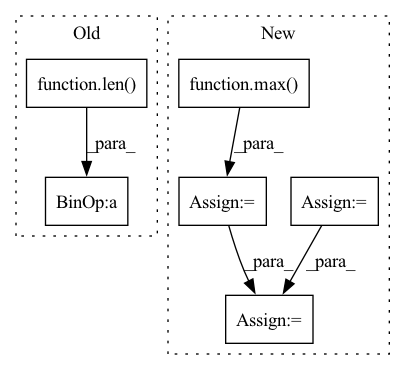

Pattern ID :40042
Before Change
// todo: randomize for augmentation
target = data["__target__"].to_numpy(dtype=np.float32)
encode_length = min(max(0, len(target) - self.max_prediction_length), self.max_encode_length)
decode_length = len( target) - encode_length
if self.add_relative_time_idx:
data["relative_time_idx"] = np.arange(-encode_length, decode_length, dtype=float) / self.max_encode_lengthAfter Change
if self.randomize_length is not None:
// modify sequence length
sequence_length_prob, encode_length_probability = Beta(*self.randomize_length).sample(torch.Size([2]))
sequence_length = int(max( 1, Binomial(sequence_length, sequence_length_prob).sample()) )
max_prediction_length = int(max(1, Binomial(max_prediction_length, encode_length_probability).sample()))
if sequence_length < len(data):
data = data.iloc[-sequence_length:] // select subset of sequence
encode_length = min(max(0, sequence_length - max_prediction_length), self.max_encode_length)
decode_length = sequence_length - encode_length
// extract data
target = data["__target__"].to_numpy(dtype=np.float32)In pattern: SUPERPATTERN
Frequency: 3
Non-data size: 6
Instances Fragment ID: 113883977
Project Name: jdb78/pytorch-forecasting
Commit Name: d6cf2348a8f2f4a9677930ac725f4c3eb3dd0cac
Time: 2020-06-22
Author: beitner.jan@bcg.com
File Name: temporal_fusion_transformer_pytorch/data.py
M Class Name: TimeSeriesDataSet
N Class Name: TimeSeriesDataSet
M Method Name: __getitem__(2)
N Method Name: __getitem__(2)
M Parent Class: Dataset
N Parent Class: Dataset
M File Name: temporal_fusion_transformer_pytorch/data.py
N File Name: temporal_fusion_transformer_pytorch/data.py
M Start Line: 146
M End Line: 148
N Start Line: 148
N End Line: 164
Before Change
reference_corpus = generate_corpus[:idx] + generate_corpus[idx+1:]
self_bleu_score.append(sentence_bleu(reference_corpus, candidate, weights,
smoothing_function=SmoothingFunction().method1))
return sum(self_bleu_score) / len( self_bleu_score)
Function name and function mapper.
Useful when we have to serialize evaluation metric namesAfter Change
return results
def self_bleu_(generate_corpus, n_grams, reference_corpus=None):
weight = [0] * max( n_grams)
weights = {}
for n_gram in n_grams:
weight[n_gram - 1] = 1.0
weights[n_gram] = tuple(weight)
weight[n_gram - 1] = 0.0
bleu = SelfBLEU(generate_corpus, weights)
scores = bleu.get_score()
results = []
for n_gram in n_grams:
score = np.array(scores[n_gram])
results.append(score.mean())
return results
Fragment ID: 113883979
Project Name: rucaibox/textbox
Commit Name: 74995b26ad538f821707a331a83f34c8559f1ed8
Time: 2020-12-03
Author: 1020139164@qq.com
File Name: textbox/evaluator/metrics.py
M Class Name: AnonimousClass
N Class Name: AnonimousClass
M Method Name: self_bleu_(3)
N Method Name: self_bleu_(3)
M Parent Class:
N Parent Class:
M File Name: textbox/evaluator/metrics.py
N File Name: textbox/evaluator/metrics.py
M Start Line: 29
M End Line: 38
N Start Line: 40
N End Line: 54
Before Change
for candidate in generate_corpus:
bleu_score.append(sentence_bleu(reference_corpus, candidate, weights,
smoothing_function=SmoothingFunction().method1))
return sum(bleu_score) / len( bleu_score)
def self_bleu_(generate_corpus, n_gram, reference_corpus=None):
weights = [0, 0, 0, 0, 0]After Change
def bleu_(generate_corpus, reference_corpus, n_grams):
weight = [0] * max( n_grams)
weights = {}
for n_gram in n_grams:
weight[n_gram - 1] = 1.0
weights[n_gram] = tuple(weight)
weight[n_gram - 1] = 0.0
bleu = BLEU(reference_corpus, weights)
scores = bleu.get_score(generate_corpus)
results = []
for n_gram in n_grams: Fragment ID: 113883973
Project Name: rucaibox/textbox
Commit Name: 74995b26ad538f821707a331a83f34c8559f1ed8
Time: 2020-12-03
Author: 1020139164@qq.com
File Name: textbox/evaluator/metrics.py
M Class Name: AnonimousClass
N Class Name: AnonimousClass
M Method Name: bleu_(3)
N Method Name: bleu_(3)
M Parent Class:
N Parent Class:
M File Name: textbox/evaluator/metrics.py
N File Name: textbox/evaluator/metrics.py
M Start Line: 18
M End Line: 25
N Start Line: 23
N End Line: 37